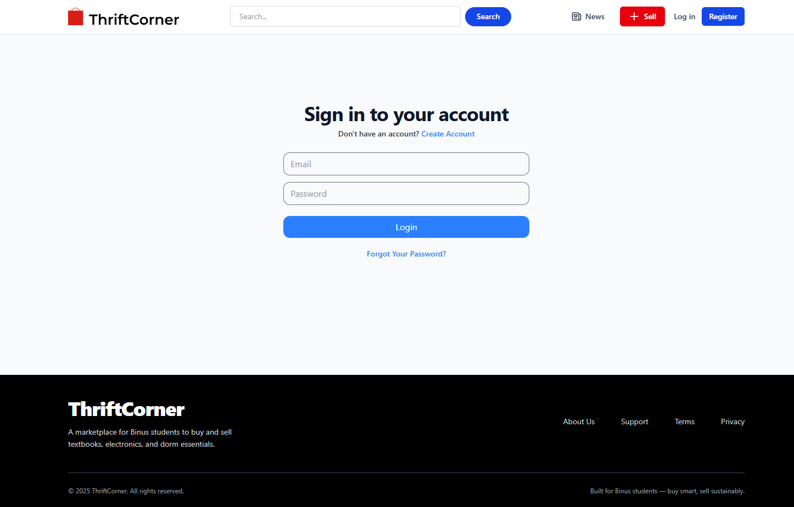

Project Description
ThriftCorner is a group project and an exclusive marketplace designed for Binus University students to easily buy and sell secondhand goods like textbooks, electronics, and dorm essentials. Built using Laravel for the backend logic and Tailwind CSS for a responsive user interface, I contributed across the entire development lifecycle, including UI/UX design, front-end implementation, and back-end development.
